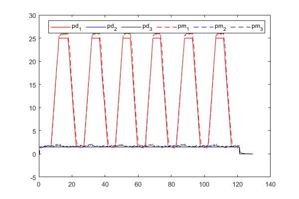
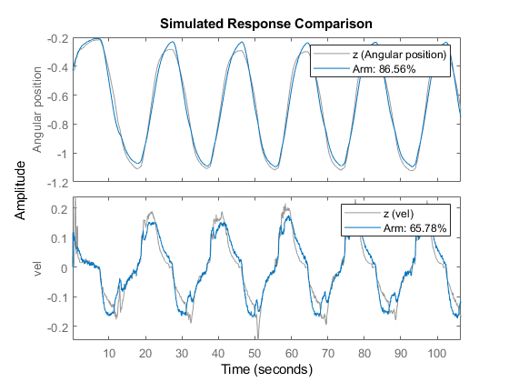
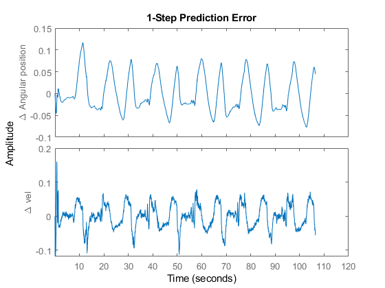
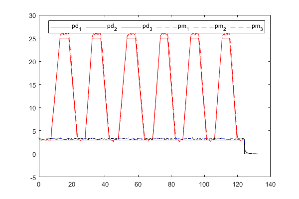

Contents
Main function for stiffness ID use data 0722
clear all close all clc
Initialize the system
par_set=[]; %flag for EOM deriviation par_set.EOM=0; %flag for plot par_set.flag_plot_rawData = 0; %flag for read txt file or mat file 1: txt 0: mat par_set.flag_read_exp = 0; %flag for plotting moving constant layer par_set.flag_plot_movingCC =0; %flag for plotting fwd kinematic results par_set.plot_fwdKinematic =0; % p1 < p2,3 % par_set.trial_4_25psi=[]; % par_set.trial_3_25psi=[]; % par_set.trial_2_25psi=[]; % par_set.trial_1_25psi=[]; % par_set.trial_0_25psi=[]; % p1 > p2,3 par_set.trial_25_0psi=[]; par_set.trial_25_1psi=[]; par_set.trial_25_2psi=[]; par_set.trial_25_3psi=[]; par_set.trial_25_4psi=[]; % Geometric para. par_set.trianlge_length=70*1e-03;% fabric triangle edge length par_set.L=0.19;%actuator length par_set.n=4;% # of joints for augmented rigid arm par_set.m0=0.35;%kg segment weight par_set.g=9.8;%% gravity constant par_set.a0=15*1e-03;%% 1/2 of pillow width par_set.r_f=sqrt(3)/6*par_set.trianlge_length+par_set.a0; % we assume the force are evenly spread on a cirlce with radius of r_f
Update location of 3 chambers P1, P2, P3
par_set.p1_angle=-150;%deg p1 position w/ the base frame % update force position of p1 p2 and p3 for i =1:3 par_set.r_p{i}=[par_set.r_f*cosd(par_set.p1_angle+120*(i-1)),par_set.r_f*sind(par_set.p1_angle+120*(i-1)),0].'; % par_set.f_p{i}=588.31*par_set.pm_MPa(:,i+1); end fprintf('System initialization done \n')
System initialization done
Read txt file or mat file
if par_set.flag_read_exp==1 % par_set.trial_0_25psi=func_high_level_exp(par_set.trial_0_25psi,2); % par_set.trial_4_25psi=func_high_level_exp(par_set.trial_4_25psi,10); % par_set.trial_3_25psi=func_high_level_exp(par_set.trial_3_25psi,9); % par_set.trial_2_25psi=func_high_level_exp(par_set.trial_2_25psi,8); % par_set.trial_1_25psi=func_high_level_exp(par_set.trial_1_25psi,7); par_set.trial_25_0psi=func_high_level_exp(par_set.trial_25_0psi,1); par_set.trial_25_4psi=func_high_level_exp(par_set.trial_25_4psi,5); par_set.trial_25_3psi=func_high_level_exp(par_set.trial_25_3psi,4); par_set.trial_25_2psi=func_high_level_exp(par_set.trial_25_2psi,3); par_set.trial_25_1psi=func_high_level_exp(par_set.trial_25_1psi,2); save('raw_id_data.mat','par_set'); fprintf( 'Saved \n' ) else fprintf( 'Loading... \n' ); load('raw_id_data.mat'); fprintf( 'Data loaded \n' ); end
Loading... Data loaded
Symbolic EOM
if par_set.EOM==1 par_set=func_EOM_baseFrame(par_set); end
system ID sets
par_set.trial_0_25psi=func_sysID(par_set.trial_0_25psi,par_set); par_set.trial_1_25psi=func_sysID(par_set.trial_1_25psi,par_set); par_set.trial_2_25psi=func_sysID(par_set.trial_2_25psi,par_set); par_set.trial_3_25psi=func_sysID(par_set.trial_3_25psi,par_set); par_set.trial_4_25psi=func_sysID(par_set.trial_4_25psi,par_set);
func_plot_pressure_3chambers(par_set.trial_25_0psi) par_set.trial_25_0psi=func_sysID(par_set.trial_25_0psi,par_set); func_plot_pressure_3chambers(par_set.trial_25_1psi) par_set.trial_25_1psi=func_sysID(par_set.trial_25_1psi,par_set); func_plot_pressure_3chambers(par_set.trial_25_2psi) par_set.trial_25_2psi=func_sysID(par_set.trial_25_2psi,par_set); func_plot_pressure_3chambers(par_set.trial_25_3psi) par_set.trial_25_3psi=func_sysID(par_set.trial_25_3psi,par_set); func_plot_pressure_3chambers(par_set.trial_25_4psi) par_set.trial_25_4psi=func_sysID(par_set.trial_25_4psi,par_set);
Dividing trainning set and validation set EstimatingEstimated [alpha,k,d] is [0.0428,0.2931,0.3642] Dividing trainning set and validation set EstimatingEstimated [alpha,k,d] is [0.0139,0.2722,0.2487] Dividing trainning set and validation set EstimatingEstimated [alpha,k,d] is [0.0452,0.2473,0.3251] Dividing trainning set and validation set EstimatingEstimated [alpha,k,d] is [0.0327,0.2905,0.3382] Dividing trainning set and validation set EstimatingEstimated [alpha,k,d] is [0.0208,0.2845,0.3073]   


xx=[min(max(par_set.trial_25_1psi.pd_psi));
min(max(par_set.trial_25_2psi.pd_psi));min(max(par_set.trial_25_3psi.pd_psi));
min(max(par_set.trial_25_4psi.pd_psi));];
y_alpha=[par_set.trial_25_1psi.trainSet.pi_set(1);
par_set.trial_25_2psi.trainSet.pi_set(1);par_set.trial_25_3psi.trainSet.pi_set(1);
par_set.trial_25_4psi.trainSet.pi_set(1);];
y_k=[par_set.trial_25_1psi.trainSet.pi_set(2);
par_set.trial_25_2psi.trainSet.pi_set(2);par_set.trial_25_3psi.trainSet.pi_set(2);
par_set.trial_25_4psi.trainSet.pi_set(2);];
y_b=[par_set.trial_25_1psi.trainSet.pi_set(3);
par_set.trial_25_2psi.trainSet.pi_set(3);par_set.trial_25_3psi.trainSet.pi_set(3);
par_set.trial_25_4psi.trainSet.pi_set(3);];
[curv1,gof1]=fit(xx,y_alpha,'poly1'); [curv2,gof2]=fit(xx,y_k,'poly1'); [curv3,gof3]=fit(xx,y_b,'poly1'); figure subplot(3,1,1) plot(xx,y_alpha,'o') hold on plot(curv1) hold off xlabel('') ylabel('\alpha') legend('data','fitted line','Orientation','horizontal') subplot(3,1,2) plot(xx,y_k,'o') hold on plot(curv2) hold off xlabel('') ylabel('k') legend OFF % ylim([0,4]) subplot(3,1,3) plot(xx,y_b,'o') hold on plot(curv3) hold off xlabel('') ylabel('b') legend OFF xlabel('pm_{2,3}') %%
%% x=[]; test_data=par_set.trial_25_0psi.trainSet; test_tspan=test_data.pd_psi(:,1); test_x=[test_data.theta_rad,test_data.velocity_theta_rad]'; test_u=test_data.pd_psi(:,2:4)'; test_b0=test_data.beta; test_phi=test_data.phi_rad; test_piSet=test_data.pi_set; test_x0=test_x(:,1); [t,x]=ode45(@(t,x) func_ode(t,x,test_u,test_tspan,test_b0,test_phi,test_piSet),test_tspan,test_x0); figure plot(t,x(:,1)) hold on plot(t,test_x(1,:)) legend('ode45','exp.') xlabel('time s') ylabel('\theta rad')